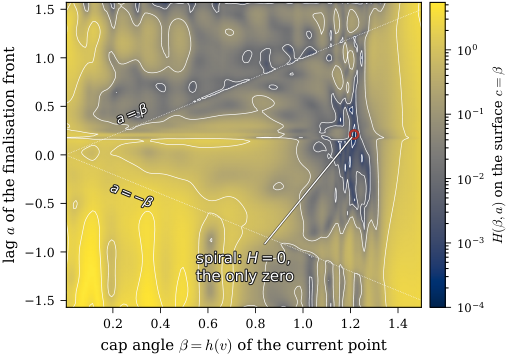

Formalizes the finite-dimensional and one-dimensional measure-theoretic reduction lemmas (polygonal reduction, Kneser–Poulsen on the line) in eight sorry-free Lean 4/Mathlib modules.
Abstract
A ship starts at a point of the plane and moves at unit speed; it has to reach an unknown straight line, of which neither the distance nor the direction is known. The competitive ratio of a path is the supremum, over all lines, of the time at which the line is reached divided by its distance. Baeza-Yates, Culberson and Rawlins conjectured that a logarithmic spiral, with ratio $C_{\mathrm{sp}} = 13.8111351794611\ldots$, is optimal. We give a computer-assisted proof. Paths are arbitrary: the distance from the start and the polar angle may both decrease. The proof lifts the set of found directions to the universal cover of the circle, where unfolding the polar angle can only increase it (Kneser-Poulsen on the line); a bookkeeping inequality with a monotone final source then bounds the covered measure by the reward of a three-state relaxed control problem, in which inward motion is an ordinary control and excursions below the guaranteed disk are impulses. An explicit $C^1$ storage function, a tensor cubic B-spline plus a closed-form term, satisfies the dissipation inequalities of that problem at the spiral's level and is tight only at the spiral; this is verified with about $10^6$ boxes of Arb ball arithmetic, an exact jet and an interval Hessian at the spiral.
Problem
A ship moving at unit speed must reach an unknown straight line whose distance and direction are both unknown. Baeza-Yates, Culberson and Rawlins conjectured that a logarithmic spiral, with competitive ratio C_sp ≈ 13.8111, is optimal.
Approach
Arbitrary paths are first reduced to polygonal ones. The set of found directions is then lifted to the universal cover of the circle, where unfolding the polar angle can only increase coverage (one-dimensional Kneser–Poulsen). A bookkeeping inequality with a monotone final source bounds the covered measure by the reward of a three-state relaxed control problem. An explicit C^1 storage function, a tensor cubic B-spline plus a closed-form term, is shown to satisfy the dissipation inequalities, verified with about 10^6 boxes of Arb ball arithmetic. Key reduction lemmas are formalized in Lean 4 with Mathlib.
Results
Every search path has competitive ratio at least C_sp, so the logarithmic spiral is optimal. The Arb certificates are produced by two independent implementations, and the eight Lean modules build without sorry using only the standard axioms.

Figure 2: Top: the slack H of hypothesis (A3) on the surface c=\beta (floating-point evaluation, logarithmic colour scale). It vanishes only at the spiral state. Bottom: the certified boxes of the second implementation on the knot cell of the spiral, and the exclusion box N on which the exact jet and the interval Hessian are used.